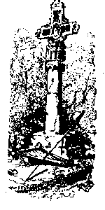

Kroaz an Hent

|
6. He daouzorn hag he diouchod ruz Gwennoc'h eged lez er pod du; Ya, mar he gwelfec'h, va mignon, Laouen a zeufe ho kalon. |
Extraits des carnets de collecte de La Villemarqué

|
P.145
ME 'MEUS CHOAZET DRE VA FENN (a) Me 'm eus choazet dre va fenn (4.2) Ur vestrezig vel d'ar zent (4.3) Ha me yelo disul d'he gweled, Ya, mar vo posubl din kerzhed. (b) Ha gaso dezhi vit present Ur walenn aour ha 'nan arc'hant Ha mar he welfec'h, va mignon, Joa vras a gaso 'n ho kalon. (5.) Daoulagadigoù zo n'he fenn Zo ken kaer vel dour er werenn An dentigoù a zo n'he fenn A zo ken kaer vel perlezenn. P.146 (6.) Hag he chouk hag he divjod Zo evel laezh gouezh deus ar pod... Ha mar he welfec'h, va mignon, Joa vras a gaso 'n ho kalon. (11) Me a yelo bep lun vintin D'ar groaz nevez war va daoulin. Me a yelo d'ar groaz nevez B'lamour d'am dous, d'am c'harantez. |
(c) Hag ez eo ganti ur seizenn
A zo enni peder walenn, Ur seizenn ruz beteg an douar A zo enni triwec'h mirouer. (d) - Me 'm eus 'r vestrezik e Pontkroaz Ha na re vihan, ha na re vras Ha mar he welfec'h, va mignon, Joa vras a gaso 'n ho kalon. (7.1) - Ma ken aliez a vil skoed (7.2) En-defe Markiz Pontkalek, (e) N'am-eus ket afer ac'hanoc'h Merc'h ar beleg kle'an la'ar eoc'h. P.147 (f) - Piv-c'hwi a gavfec'h da brouved La'ar vezen-me merc'h ar beleg. Me zo merc'h 'n ozac'h a feson Ginidig mat deus a Leon. P. 148 EVNIK ER C'HOAD GLAS (1.1) Evnig er c'hoad glas. Ha melenig e zivaskell, (1.3) E galonik ruz, e benn glas An evnig zo e beg ar wezenn vras. |
(2.1) Mintin-mañ ema diskennet
War bordig mantel an oaled, (3.1) Din-me ken aliez ' brepoz Ha zo delioù 'n ur bouked roz: (3.3)"Kemerit 'r vestrez, va mignon A rayo vad bras d'ho kalon!" DORNSKRID MERLIN (g) Chañs vat a heul chañs fall bepred Vel delioù glaz, delioù sec'het, Vel hogan ruz, spern du flastret. (9.1) Kement tra 'deus e lezenn graet: (h) Amzer nevez a heul ar goañv Hag ar goañv a heul an hañv.- P. 211 ME 'M-EUS UN EVNIK ROUS (i) Me'm-eus un evnik rous hañvet un durzhunell (2.1) Hag a zisken bemde war kornik ar mantell (3.1) Hag a lavar din-me ken alies 'brepoz Hag a zo delienn e-barzh ar boked roz: (j) "'N hini 'goll e vestrez n'e-neus na deiz na noz." |
Ton2; Kempennet gant Christian Souchon